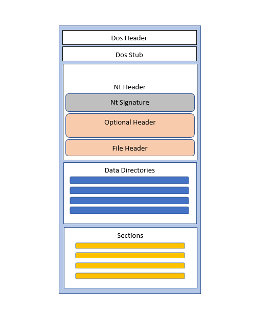

模块 08 - 便携式可执行文件格式(PE)
模块 08 - 便携式可执行文件格式(PE)
目标
- 使用 PE-Bear 打开任何 EXE 文件，点击“DOS 头”，找到字节 0x4D 和 0x5A。
- 找到 'e_lfanew' 的值（提示：查找偏移量 0x3C）
- 在 PE-Bear 的“文件头”选项卡下，查看 “Sections Count” 的值。将该数字与“区段”选项卡中的节数进行验证。
- 查看“导入”选项卡下导入的 DLL 和 Windows API。
可移植可执行文件 (PE) 是 Windows 上可执行文件的格式。PE 文件扩展名示例有 .exe、.dll、.sys 和 .scr。本模块讨论 PE 结构，这对构建或逆向工程恶意软件时要了解很重要。
请注意，本模块和未来模块经常将可执行文件（例：EXEs、DLLs）互换地称为“Images”。
PE 结构
下图显示了便携式可执行文件的简化结构。图像中显示的每个标头都定义为一个数据结构，其中包含有关 PE 文件的信息。本模块将详细解释每个数据结构。

DOS Header（IMAGE_DOS_HEADER）
PE 文件的第一个头总是以两个字节 0x4D 和 0x5A 为前缀，通常称为 MZ。这些字节表示 DOS 头签名，用于确认正在解析或检查的文件是有效的 PE 文件。DOS 头是一个数据结构，定义如下：
typedef struct _IMAGE_DOS_HEADER { // DOS .EXE 头
WORD e_magic; // 魔术数字
WORD e_cblp; // 文件最后一页的字节数
WORD e_cp; // 文件中的页数
WORD e_crlc; // 重定位
WORD e_cparhdr; // 段落中头的大小
WORD e_minalloc; // 需要的最小额外段落
WORD e_maxalloc; // 需要的最大额外段落
WORD e_ss; // 初始（相对）SS 值
WORD e_sp; // 初始 SP 值
WORD e_csum; // 校验和
WORD e_ip; // 初始 IP 值
WORD e_cs; // 初始（相对）CS 值
WORD e_lfarlc; // 重定位表的 file 地址
WORD e_ovno; // 覆盖号
WORD e_res[4]; // 保留字
WORD e_oemid; // OEM 标识符（用于 e_oeminfo）
WORD e_oeminfo; // OEM 信息；e_oemid 指定
WORD e_res2[10]; // 保留字
LONG e_lfanew; // 到 NT 头的偏移量
} IMAGE_DOS_HEADER, *PIMAGE_DOS_HEADER;
该结构中最主要的成员是 e_magic 和 e_lfanew。
e_magic 是 2 个字节，固定值为 0x5A4D 或 MZ。
e_lfanew 是一个 4 字节的值，持有到 NT 头开始处的偏移量。请注意，e_lfanew 始终位于 0x3C 偏移量处。
DOS Stub
在继续介绍 NT 头结构之前，存在一个 DOS Stub，它是一个错误信息，它打印以下内容："This program cannot be run in DOS mode"，此情况是在程序加载在 DOS 模式或 "Disk Operating Mode" 下时触发的。值得注意的是，程序员可以在编译时更改此错误消息。这不是一个 PE 头，但了解它有好处。
NT Header (IMAGE_NT_HEADERS)
NT 头至关重要，因为它包含两个其他映像头：FileHeader 和 OptionalHeader，其中包含大量有关 PE 文件的信息。与 DOS 头类似，NT 头包含一个用于验证它的签名成员。通常，签名元素等于 "PE" 字符串，由 0x50 和 0x45 字节表示。但由于签名是 DWORD 数据类型的，所以签名将表示为 0x50450000，它仍然是 "PE"，只是用两个空字节填充。可以使用 DOS 头中的 e_lfanew 成员访问 NT 头。
NT 头结构根据机器体系结构而有所不同。
32 位版本：
typedef struct _IMAGE_NT_HEADERS {
DWORD Signature;
IMAGE_FILE_HEADER FileHeader;
IMAGE_OPTIONAL_HEADER32 OptionalHeader;
} IMAGE_NT_HEADERS32, *PIMAGE_NT_HEADERS32;
64 位版本：
typedef struct _IMAGE_NT_HEADERS64 {
DWORD Signature;
IMAGE_FILE_HEADER FileHeader;
IMAGE_OPTIONAL_HEADER64 OptionalHeader;
} IMAGE_NT_HEADERS64, *PIMAGE_NT_HEADERS64;
唯一区别是 OptionalHeader 数据结构，IMAGE_OPTIONAL_HEADER32 和 IMAGE_OPTIONAL_HEADER64。
文件头 (IMAGE_FILE_HEADER)
接下来是下一个头，可以从上一个 NT 头数据结构中访问
typedef struct _IMAGE_FILE_HEADER {
WORD Machine;
WORD NumberOfSections;
DWORD TimeDateStamp;
DWORD PointerToSymbolTable;
DWORD NumberOfSymbols;
WORD SizeOfOptionalHeader;
WORD Characteristics;
} IMAGE_FILE_HEADER, *PIMAGE_FILE_HEADER;
最重要的结构成员是：
NumberOfSections- PE 文件中的节区数（详见后面）。Characteristics- 指定可执行文件特定属性的标志，例如它是动态链接库 (DLL) 还是控制台应用程序。SizeOfOptionalHeader- 以下可选头的长度
有关文件头的其他信息，请参阅 官方文档。
可选头（IMAGE_OPTIONAL_HEADER）)
可选头非常重要，虽然它被称为“可选”，但它是 PE 文件执行所必需的。之所以称为可选，是因为某些文件类型没有它。
可选头有两个版本，一个用于 32 位系统，一个用于 64 位系统。这两个版本的数据结构中成员几乎相同，主要区别是某些成员的大小。64 位版本中使用 ULONGLONG，32 位版本中使用 DWORD。此外，32 位版本中有一些成员在 64 位版本中没有。
32 位版本：
typedef struct _IMAGE_OPTIONAL_HEADER {
WORD Magic;
BYTE MajorLinkerVersion;
BYTE MinorLinkerVersion;
DWORD SizeOfCode;
DWORD SizeOfInitializedData;
DWORD SizeOfUninitializedData;
DWORD AddressOfEntryPoint;
DWORD BaseOfCode;
DWORD BaseOfData;
DWORD ImageBase;
DWORD SectionAlignment;
DWORD FileAlignment;
WORD MajorOperatingSystemVersion;
WORD MinorOperatingSystemVersion;
WORD MajorImageVersion;
WORD MinorImageVersion;
WORD MajorSubsystemVersion;
WORD MinorSubsystemVersion;
DWORD Win32VersionValue;
DWORD SizeOfImage;
DWORD SizeOfHeaders;
DWORD CheckSum;
WORD Subsystem;
WORD DllCharacteristics;
DWORD SizeOfStackReserve;
DWORD SizeOfStackCommit;
DWORD SizeOfHeapReserve;
DWORD SizeOfHeapCommit;
DWORD LoaderFlags;
DWORD NumberOfRvaAndSizes;
IMAGE_DATA_DIRECTORY DataDirectory[IMAGE_NUMBEROF_DIRECTORY_ENTRIES];
} IMAGE_OPTIONAL_HEADER32, *PIMAGE_OPTIONAL_HEADER32;
64 位版本：
typedef struct _IMAGE_OPTIONAL_HEADER64 {
WORD Magic;
BYTE MajorLinkerVersion;
BYTE MinorLinkerVersion;
DWORD SizeOfCode;
DWORD SizeOfInitializedData;
DWORD SizeOfUninitializedData;
DWORD AddressOfEntryPoint;
DWORD BaseOfCode;
ULONGLONG ImageBase;
DWORD SectionAlignment;
DWORD FileAlignment;
WORD MajorOperatingSystemVersion;
WORD MinorOperatingSystemVersion;
WORD MajorImageVersion;
WORD MinorImageVersion;
WORD MajorSubsystemVersion;
WORD MinorSubsystemVersion;
DWORD Win32VersionValue;
DWORD SizeOfImage;
DWORD SizeOfHeaders;
DWORD CheckSum;
WORD Subsystem;
WORD DllCharacteristics;
ULONGLONG SizeOfStackReserve;
ULONGLONG SizeOfStackCommit;
ULONGLONG SizeOfHeapReserve;
ULONGLONG SizeOfHeapCommit;
DWORD LoaderFlags;
DWORD NumberOfRvaAndSizes;
IMAGE_DATA_DIRECTORY DataDirectory[IMAGE_NUMBEROF_DIRECTORY_ENTRIES];
} IMAGE_OPTIONAL_HEADER64, *PIMAGE_OPTIONAL_HEADER64;
可选头包含大量可用的信息。以下是常用的部分结构成员：
Magic- 描述映像文件的状态（32 或 64 位映像）MajorOperatingSystemVersion- 所需操作系统的主要版本号（例如 11、10）MinorOperatingSystemVersion- 所需操作系统的次要版本号（例如 1511、1507、1607）SizeOfCode-.text节的大小（后面讨论）AddressOfEntryPoint- 指向文件入口点（通常是_main_函数）的偏移量BaseOfCode- 指向.text节开头的偏移量SizeOfImage- 映像文件的大小（以字节为单位）ImageBase- 指定应用程序在执行时加载到内存中的首选地址。但是，由于 Windows 的内存保护机制（如地址空间布局随机化 (ASLR)），很少看到映像映射到其首选地址，因为 Windows PE 加载器将文件映射到不同的地址。Windows PE 加载器完成的这种随机分配会导致未来技术实现出现问题，因为某些被认为是常量的地址被更改了。然后，Windows PE 加载器将通过PE 重定位来修复这些地址。DataDirectory- 可选头中最重要的成员之一。这是 IMAGE_DATA_DIRECTORY 数组，包含 PE 文件中的目录（将在下面讨论）。
数据目录
数据目录可以通过可选头的最后一个成员访问。这是一个 IMAGE_DATA_DIRECTORY 数据类型的数组，具有以下数据结构：
typedef struct _IMAGE_DATA_DIRECTORY {
DWORD VirtualAddress;
DWORD Size;
} IMAGE_DATA_DIRECTORY, *PIMAGE_DATA_DIRECTORY;
数据目录数组的大小为 IMAGE_NUMBEROF_DIRECTORY_ENTRIES，这是一个常数值为 16。数组中的每个元素代表一个特定数据目录，其中包含有关 PE 节或数据表（保存特定 PE 信息）的一些数据。
可以使用特定数据目录在其在数组中的索引来访问它。
#define IMAGE_DIRECTORY_ENTRY_EXPORT 0 // 导出目录
#define IMAGE_DIRECTORY_ENTRY_IMPORT 1 // 导入目录
#define IMAGE_DIRECTORY_ENTRY_RESOURCE 2 // 资源目录
#define IMAGE_DIRECTORY_ENTRY_EXCEPTION 3 // 异常目录
#define IMAGE_DIRECTORY_ENTRY_SECURITY 4 // 安全目录
#define IMAGE_DIRECTORY_ENTRY_BASERELOC 5 // 基重定位表
#define IMAGE_DIRECTORY_ENTRY_DEBUG 6 // 调试目录
#define IMAGE_DIRECTORY_ENTRY_ARCHITECTURE 7 // 架构特定数据
#define IMAGE_DIRECTORY_ENTRY_GLOBALPTR 8 // GP 的 RVA
#define IMAGE_DIRECTORY_ENTRY_TLS 9 // TLS 目录
#define IMAGE_DIRECTORY_ENTRY_LOAD_CONFIG 10 // 加载配置目录
#define IMAGE_DIRECTORY_ENTRY_BOUND_IMPORT 11 // 头文件中的绑定导入目录
#define IMAGE_DIRECTORY_ENTRY_IAT 12 // 导入地址表
#define IMAGE_DIRECTORY_ENTRY_DELAY_IMPORT 13 // 延迟加载导入描述符
#define IMAGE_DIRECTORY_ENTRY_COM_DESCRIPTOR 14 // COM 运行时描述符
以下两个小节将简要介绍两个重要的数据目录：导出目录 和 导入地址表。
导出目录（Export Directory）
PE 的导出目录是一个数据结构，包含可执行文件中导出的函数和变量的信息。它包含导出函数和变量的地址，其他可执行文件可使用这些地址访问函数和数据。一般来说，导出目录位于导出函数的 DLL 中（例如， kernel32.dll 导出 CreateFileA）。
导入地址表（Import Address Table）
PE 文件中有一个数据结构导入地址表，它包含从其他可执行文件中引入的函数地址的信息。这些地址用于访问其他可执行文件中的函数和数据（例如，Application.exe 从 kernel32.dll 导入 CreateFileA 函数）。
PE 区段
PE 区段包含用于创建可执行程序的代码和数据。每个 PE 区段都有一个唯一名称，通常包含可执行代码、数据或资源信息。PE 区段的数量不是固定的，因为不同的编译器可以根据配置添加、删除或合并区段。一些区段也可以在之后手动添加，因此它是动态的， IMAGE_FILE_HEADER.NumberOfSections 有助于确定该数量。
以下 PE 节是最重要的，几乎存在于每个 PE 中。
.text- 包含可执行代码，即已编写的代码。.data- 包含已初始化的数据，即在代码中初始化的变量。.rdata- 包含只读数据。这些是用const修饰的前缀的常量变量。.idata- 包含导入表。这些是与使用代码调用的函数相关的信息表。Windows PE 加载器使用它来确定要加载到进程的 DLL 文件，以及从每个 DLL 使用的函数。.reloc- 包含有关如何修复内存地址的信息，以便程序可以在没有任何错误的情况下加载到内存中。.rsrc- 用于存储图标和位图等资源
每个 PE 节都有一个包含有关其有价值信息的数据结构 IMAGE_SECTION_HEADER 。这些结构保存在 PE 文件中的 NT 头下，并相互堆叠，其中每个结构代表一个节。
请记住，IMAGE_SECTION_HEADER 结构如下：
typedef struct _IMAGE_SECTION_HEADER {
BYTE Name[IMAGE_SIZEOF_SHORT_NAME];
union {
DWORD PhysicalAddress;
DWORD VirtualSize;
} Misc;
DWORD VirtualAddress;
DWORD SizeOfRawData;
DWORD PointerToRawData;
DWORD PointerToRelocations;
DWORD PointerToLinenumbers;
WORD NumberOfRelocations;
WORD NumberOfLinenumbers;
DWORD Characteristics;
} IMAGE_SECTION_HEADER, *PIMAGE_SECTION_HEADER;
看一下元素，每一个都非常有价值且很重要：
Name- 该节的名称。（例如 .text、.data、.rdata）。PhysicalAddress或VirtualSize- 内存中节的大小。VirtualAddress- 内存中节的起始位置的偏移量。
更多参考资料
如果对某些章节需要进一步的说明，强烈推荐参阅以下0xRick's Blog上的博客文章。
- PE 概览 - https://0xrick.github.io/win-internals/pe2/
- DOS 头、DOS 存根和 Rich 头 - https://0xrick.github.io/win-internals/pe3/
- NT 头 - https://0xrick.github.io/win-internals/pe4/
- 数据目录、Section 头和 Sections - https://0xrick.github.io/win-internals/pe5/
- PE 导入（导入目录表、ILT、IAT） - https://0xrick.github.io/win-internals/pe6/
结论
理解 PE 头部在首次遇到时可能会有些困难。幸运的是，基本模块中没有任何一个需要深入了解 PE 结构。然而，为了使恶意软件执行更复杂的技术，您需要更好地理解，因为某些代码需要解析 PE 文件的头部和节。这个需求可能会出现在中级和高级模块中。